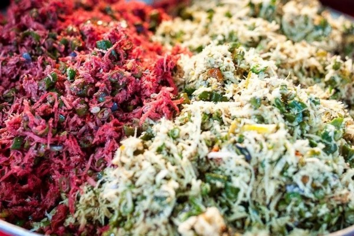

Lawar Khas Bali
Lawar adalah masakan berupa campuran sayur-sayuran dan daging cincang yang dibumbui secara merata yang berasal dari Bali. Makanan ini lazim disajikan dalam rumah tangga di Bali atau dijual secara luas di rumah-rumah makan dengan sebutan lawar Bali. Lawar dibuat dari daging yang dicincang, sayuran, sejumlah bumbu-bumbu dan kelapa. Kadang-kadang di beberapa jenis lawar diberikan unsur yang dapat menambah rasa dari lawar itu yaitu darah dari daging itu sendiri. Darah tersebut dicampurkan dengan bumbu-bumbu tertentu sehingga menambah lezat lawar tersebut. Lawar sendiri tidak dapat bertahan lama makanan ini jika didiamkan di udara terbuka hanya bertahan setengah hari.
Di Bali ada tradisi membuat lawar dan memakannya bersama-sama yang disebut juga ngelawar. Tradisi ini punya makna cukup dalam. Ngelawar ini berkembang sejak zaman kerjaan Bali. Biasanya ngelawar ini berkembang secara merata di sekitar kerajaan, karena raja Bali senang sekali menikmati lawar. Lawar dalam tradisi Bali biasa dilakukan ketika upacara Panca Yadnya sebagai persembahan dan juga untuk dimakan. Untuk persembahan, peletakan lawar tak bisa sembarangan. Lawar harus diletakkan sesuai arah mata angin. Lawar putih diletakkan di arah timur untuk Dewa Iswara, lawar merah ada di arah selatan untuk Dewa Brahma, sementara lawar kuning diletakkan di arah berat untuk Dewa Mahadewa, kemudian lawar hitam atau jejeruk diletakkan di arah barat, Dewa Mahadewa. Lawar juga diletakkan di tengah dengan lima warna campuran, Dewa Siwa. Warna-warna lawar yang merepresentasikan lima dewa berbeda juga ternyata ada maknanya tersendiri. Warna putih untuk lambang kesucian, merah lambang keberanian, kuning lambang kebijaksanaan, hitam lambang kasih sayang, dan warna campuran merepresentasikan persatuan atau terpusatkan.